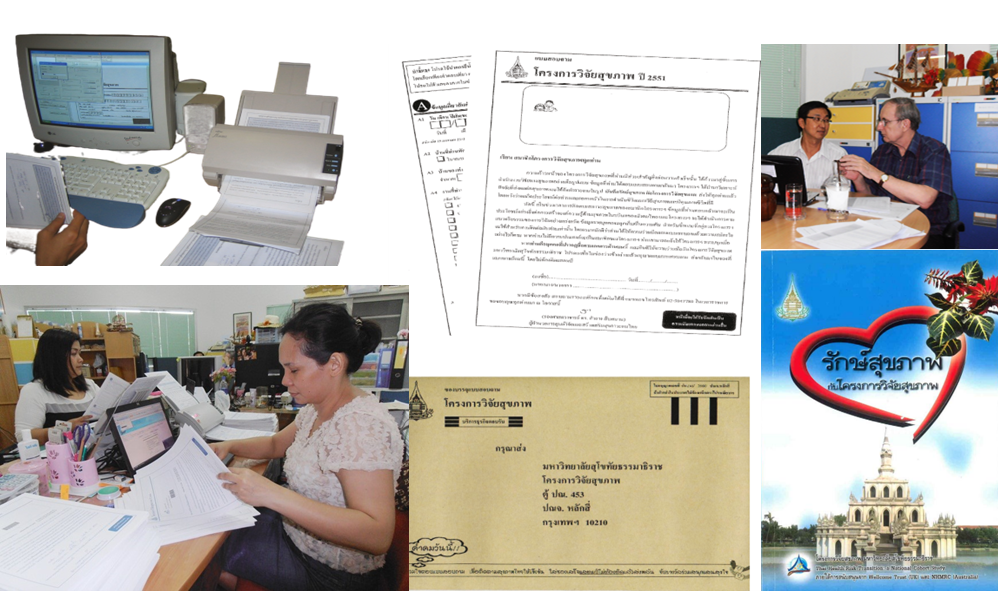
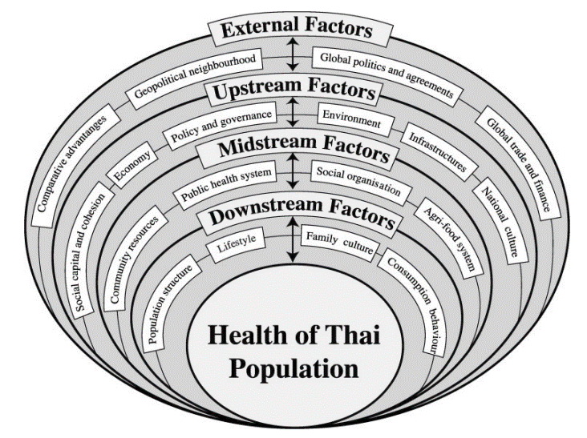
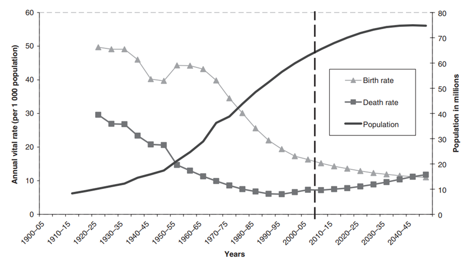

Home
Publications
TCS Team
Pictures
Home
Publications
TCS Team
Pictures
Thai Cohort Study(TCS)
The national health-risks cohort study of 87,134 Thai participants aged 15 to 87, started in 2005 and followed up in 2009 and 2013.

Figure 1 Health-risks drivers of Thailand

Figure 2 Demographic Transition in Thailand

Sources: (before 1940, population) Hirschman, C (1994)2.
(before 1950) Crude birth and death rates adapted from estimates for each year during the period 1920–1950, Economic and
Social Commission for Asia and the Pacific, 19763.
(from 1950) Source: Population Division of the Department of Economic and Social Affairs of the United Nations Secretariat,
World Population Prospects: The 2006 Revision, http://esa.un.org/unpp/ (Thailand - viewed 23/05/2007)